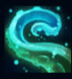
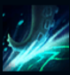
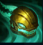
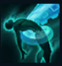
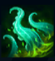

Illaoi
| Illaoi The Kraken Priestess | |
|---|---|
| Release date | 24.11.2015 |
| Class | Juggernaut |
| Positions | Top |
| Resource | Mana |
| Range type | Melee |
| Adaptive type | Physical |
| Base statistics | |||
| Health | 586 – 2201 | Mana | 300 – 980 |
| Health regen. | 9.5 – 23.1
|
Mana regen. | 7.5 – 20.25 |
| Armor | 35 – 99.6 | Attack damage | 68 – 153 |
| Magic resist. | 32 – 53.25 | Crit. damage | 175% |
| Move. speed | 340 | Attack range | 125 |
Fizicul impresionant al lui Illaoi este întrecut doar de credința neclintită de care dă dovadă. Preoteasa Marelui Kraken smulge spiritele inamicilor săi cu ajutorul unui idol auriu gigantic și le distruge percepția realității. Toți cei ce o pun la încercare pe ''vestitoarea adevărului lui Nagakabouros'' află rapid că Illaoi nu luptă niciodată singură, ci alături de zeița Insulei Șerpilor. |  |
PROFETESA ZEIȚEI ANTICE Illaoi și gazdele create de ea invocă periodic tentacule pe zidurile din apropiere. Tentaculele lovesc spiritele, gazdele și țintele abilității ''O lecție dură''. Tentaculele le provoacă daune fizice inamicilor pe care îi lovesc și, dacă nimeresc un campion inamic, o vindecă pe Illaoi. |
||
|---|---|---|---|---|
 |
LOVITURĂ DE TENTACUL Mărește daunele provocate de tentacule. La activare, Illaoi lovește cu un tentacul care provoacă daune fizice. |
|||
 |
O LECȚIE DURĂ Illaoi sare către o țintă și îi provoacă daune fizice, iar tentaculele din apropiere atacă și ele același adversar. |
|||
|  |
TESTUL SPIRITULUI Illaoi smulge spiritul din corpul unui inamic, forțându-l să apară în fața sa. Spiritele reflectă asupra țintei inițiale o parte din daunele suferite. Dacă sunt ucise sau dacă ținta se îndepărtează prea mult de spirit, ținta inițială se transformă în gazdă și începe să creeze tentacule. |
|||
 |
TRIUMFUL CREDINȚEI Illaoi își izbește idolul de pământ, provocându-le daune fizice inamicilor din apropiere. Pentru fiecare campion inamic lovit, pe hartă apare câte un tentacul. |